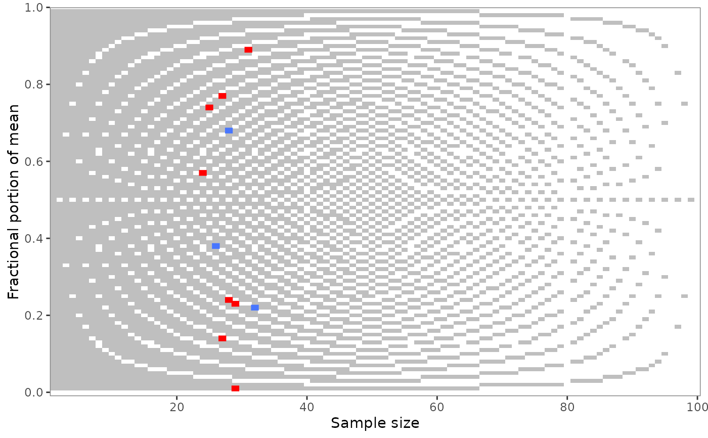

grim_plot() visualizes summary data and their mutual GRIM
consistency. Call this function only on a data frame that resulted from a
call to grim_map().
Consistent and inconsistent value pairs from the input data frame are shown in distinctive colors. By default, consistent value pairs are blue and inconsistent ones are red. These and other parameters of the underlying geoms can be controlled via arguments.
The background raster follows the rounding argument from the grim_map()
call (unless any of the plotted mean or proportion values has more than 2
decimal places, in which case a gradient is shown, not a raster).
Usage
grim_plot(
data = NULL,
show_data = TRUE,
show_raster = TRUE,
show_gradient = TRUE,
n = NULL,
digits = NULL,
rounding = "up_or_down",
color_cons = "royalblue1",
color_incons = "red",
tile_alpha = 1,
tile_size = 1.5,
raster_alpha = 1,
raster_color = "grey75"
)Arguments
- data
Data frame. Result of a call to
grim_map().- show_data
Boolean. If set to
FALSE, test results from the data are not displayed. Choose this if you only want to show the background raster. You can then control plot parameters directly via then,digits, androundingarguments. Default isTRUE.- show_raster
Boolean. If
TRUE(the default), the plot has a background raster.- show_gradient
Boolean. If the number of decimal places is 3 or greater, should a gradient be shown to signal the overall probability of GRIM inconsistency? Default is
TRUE.- n
Integer. Maximal value on the x-axis. Default is
NULL, in which casenbecomes10 ^ digits(e.g.,100ifdigitsis2).- digits
Integer. Only relevant if
show_datais set toFALSE. The plot will then be constructed as it would be for data where allxvalues have this many decimal places. Default is2.- rounding
String. Only relevant if
show_datais set toFALSE. The plot will then be constructed as it would be for data rounded in this particular way. Default is"up_or_down".- color_cons, color_incons
Strings. Fill colors of the consistent and inconsistent scatter points. Defaults are
"royalblue1"(consistent) and"red"(inconsistent).- tile_alpha, tile_size
Numeric. Further parameters of the scatter points: opacity and, indirectly, size. Defaults are
1and1.5.- raster_alpha, raster_color
Numeric and string, respectively. Parameters of the background raster: opacity and fill color. Defaults are
1and"grey75".
Background raster
The background raster shows the probability of GRIM-inconsistency for random means or proportions, from 0 (all inconsistent) to the greatest number on the x-axis (all consistent). If the number of decimal places in the inputs -- means or percentages -- is 3 or greater, individual points would be too small to display. In these cases, there will not be a raster but a gradient, showing the overall trend.
As any raster only makes sense with respect to one specific number of
decimal places, the function will throw an error if these numbers differ
among input x values (and show_raster is TRUE). You can avoid the
error and force plotting by specifying digits as the number of decimal
places for which the raster or gradient should be displayed.
For 1 or 2 decimal places, the raster will be specific to the rounding
procedure. As the raster varies by rounding procedure, it will
automatically correspond to the rounding argument specified in the
preceding grim_map() call. This works fast because the raster is based on
data saved in the package itself, so these data don't need to be generated
anew every time the function is called. Inconsistent value sets are marked
with dark boxes. All other places in the raster denote consistent value
sets. The raster is independent of the data -- it only follows the
rounding specification in the grim_map() call and the digits argument
in grim_plot().
Display an "empty" plot, one without empirical test results, by setting
show_data to FALSE. You can then control key parameters of the plot
with digits and rounding.
With grim_map()'s default for rounding, "up_or_down", strikingly few
values are flagged as inconsistent for sample sizes 40 and 80 (or 4 and 8).
This effect disappears if rounding is set to any other value. For a list
of values that rounding can take, see documentation for grim(), section
Rounding.
The 4/8 leniency effect arises because accepting values rounded either up
or down is more careful and conservative than any other rounding procedure.
In any case, grim_plot() doesn't cause this effect --- it only reveals
it.
References
Brown, N. J. L., & Heathers, J. A. J. (2017). The GRIM Test: A Simple Technique Detects Numerous Anomalies in the Reporting of Results in Psychology. Social Psychological and Personality Science, 8(4), 363–369. https://journals.sagepub.com/doi/10.1177/1948550616673876
Examples
# Call `grim_plot()` following `grim_map()`:
pigs1 %>%
grim_map() %>%
grim_plot()

# If you change the rounding procedure
# in `grim_map()`, the plot will
# follow automatically if there is
# a difference:
pigs1 %>%
grim_map(rounding = "ceiling") %>%
grim_plot()
 # For percentages, the y-axis
# label also changes automatically:
pigs2 %>%
grim_map(percent = TRUE) %>%
grim_plot()
#> ℹ `x` converted from percentage
# For percentages, the y-axis
# label also changes automatically:
pigs2 %>%
grim_map(percent = TRUE) %>%
grim_plot()
#> ℹ `x` converted from percentage